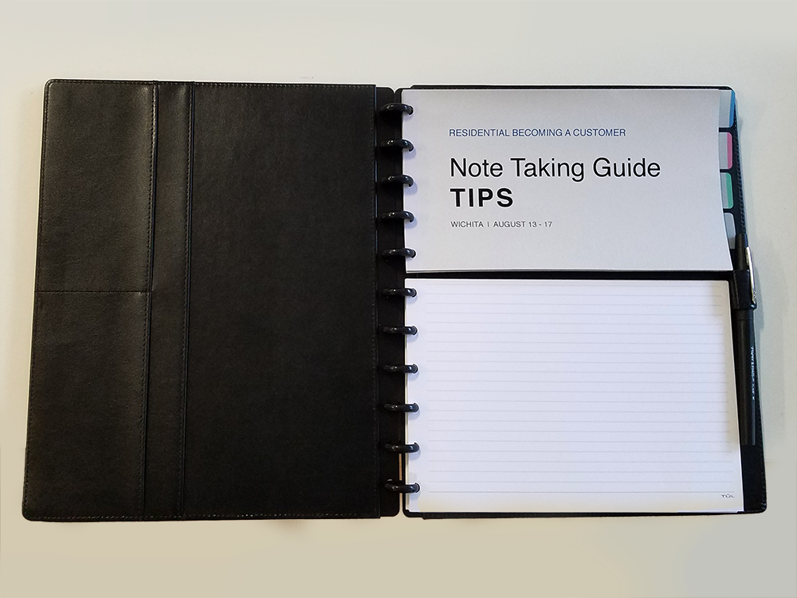

Notebook
Improved notetaking tool for Cox Communications' service design researchObjective
I was tasked with designing an improved notetaking tool to be used mainly by project stakeholders while they are in the field conducting offsite ethnographic interviews.
Background
At Cox Communications project stakeholders are often given hands-on roles, such as notetaker, during field research. Since the stakeholders may be new to design research, the designers heading the research would like them to have reference material and a list of things they can look out for while they observe and take notes.
The previous notetaking system was a large stapled packet. Large and unwieldy, each packet weighed a couple pounds. Because one packet was required per interview, there ended up being 12 in total. This took up space in suitcases, and resulted in hundreds of dollars of shiping costs. Although the packet contained lots of helpful tips and information, it was too large to be navigated quickly and those using it would quickly give up trying to flip to the correct page, opting instead write wherever was convenient. The large size also proved inconvenient.
Approach
Through discussion with the designers about their needs and their issues with the existing notetaking booklet, a list of requirements for the new design emerged.
The designers wanted a notetaking tool that would:
- Minimize wasted paper
- Make note capure easy regardless of the order topics are discussed in
- Be easy to handle in the field
- Feel thoughtful and crafted and have a professional appearance
Result
"We're back from Wichita. Your notebook design worked amazingly well. Everyone loved them and it made note taking and transportation way easier. Thanks for the ingenious solution to an annoying problem we've been dealing with for almost two years!"
-Stephen Taylor (Head of Design Research at Harmonic Design)